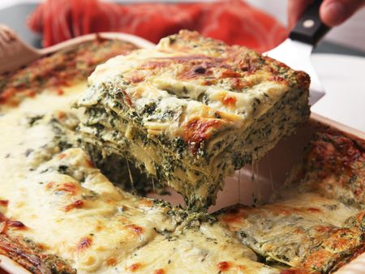

Home
Spinach Lasagna

Description
I don't remember who taught me this recipe. What I do know is that it never fails to please those who try it. Lasagna is always
a crowd pleaser but what makes this version so special is a layer of sour cream and spinach which replaces the more traditional bechamel layer.
I love it, my partner and kids love it and I'm sure your tastebuds will love it too!
Ingredients
- Frozen Spinach (500g)
- Sour Cream (220g)
- Mince Meat (700g)
- Tomato Passata (500g)
- Chopped Tomatoes (400g)
- White Onion (1)
- Garlic (4 cloves)
- Grated Cheddar (300g)
- Lasagna Sheets (18-20)
- Smoked Paprika Powder
Steps
- Preheat the oven to gas mark 6 / 200 degrees celcius.
- Fry chopped onions until they're translucent (+- 10 mins). Add chopped garlic for the last few minutes and then remove from the pan.
- Heat the pan at the highest possible temperature and then fry the mince meat for a few minutes. Fry in batches to make sure the meat does not cook.
- Add onion & garlic to the fried meat. Also throw in paprika powder, salt & pepper and mix well.
- Add chopped tomatoes & tomato passata to the pan and cook for a minute or two. Add some sugar to the sauce if it is too sour.
- Meanwhile in another pan or pot, defreeze the Spinach.
- When the Spinach is not frozen anymore, mix it with the sour cream and add salt & pepper.
- In a baking tray, put a layer of your tomato-meat-onion sauce. Cover with grated cheddar and then add lasagna sheets on top of the cheese.
- Next spread a layer of the spinach-sour-cream sauce. Do not put cheese on this; immediately cover with more lasagna sheets.
- Finally add another layer of tomato-meat-onion sauce and top it up with more grated cheddar.
- Place the baking tray in the oven and bake for 40 minutes. After 40 minutes it's ready to eat; enjoy!